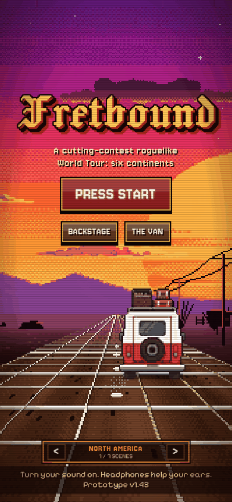
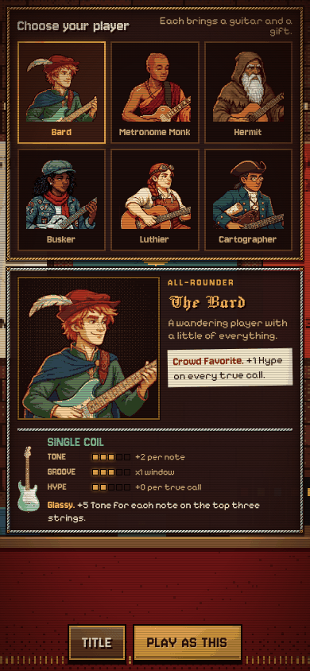
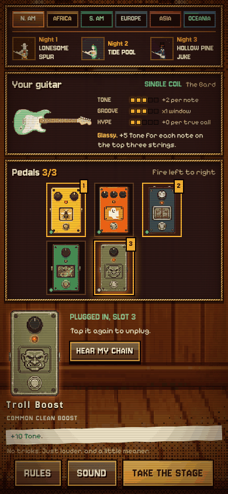
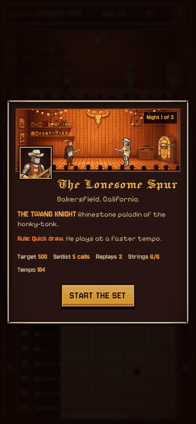
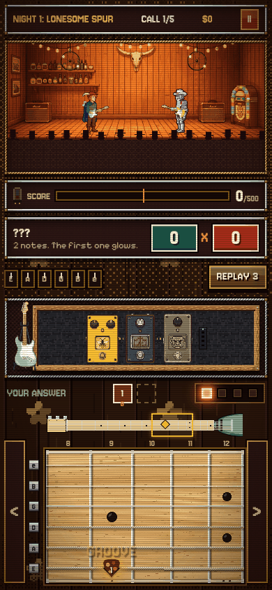
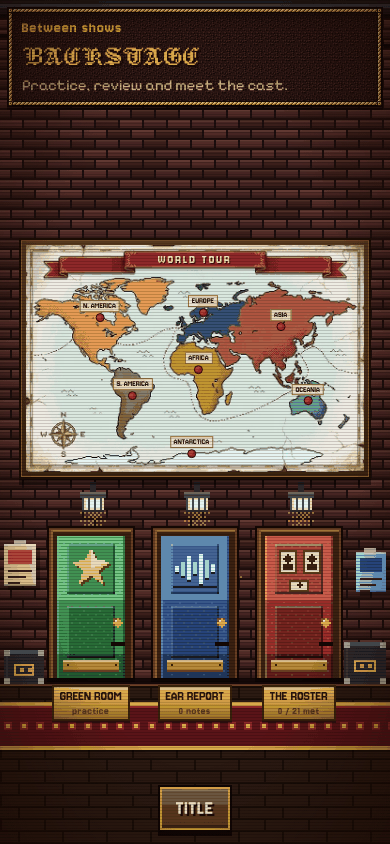
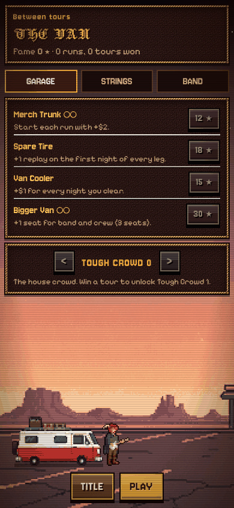

FretboundAn ear-training roguelike for guitar
A rival plays a short phrase. You play it back by ear on a fretboard on your screen. Win the night, get paid, buy pedals, and take your guitar on a tour round the world.
Free, with no account and nothing to install. It runs on phones, tablets and computers. Turn your sound on; headphones help. Fretbound is still a prototype, so expect a few rough edges.

How a night goes
- Listen. Tonight’s rival plays a short phrase, the call. You only get to hear it.
- Play it back, note for note, anywhere on the neck. The first note glows gold; the rest you find by ear.
- Mind the beat. Tapping near the beat adds Groove. The same note played higher up the neck scores more Tone.
- Miss a note and that string snaps. Now you have to find the notes somewhere else. You get three replays a night.
- Reach the target before the setlist runs out and you get paid. Spend it at the merch table on pedals and new strings.
TONE x HYPE = your score
Tone comes from the notes you play and where you play them. Hype comes from the kind of call, your groove, your guitar and your pedals. A run is a tour of four legs, with two continents to choose from at each booking, and it ends when you lose a night.
What’s inside
- 60 kinds of call. It starts with fifths, fourths, octaves and thirds, then moves on to triads, 7th chords, pentatonic runs and scales from round the world: the Ethiopian modes, flamenco’s Phrygian, Japanese scales like Hirajoshi, ragas and gamelan.
- Six players, each with a guitar and a gift. The Bard, the Metronome Monk, the Hermit, the Busker, the Luthier and the Cartographer. The Hermit’s first note never glows. The Monk’s groove window is tighter but pays more. The Cartographer sees two more frets at once.
- 24 pedals that change the scoring, and they fire left to right, so the order matters. Glass Chorus pays for notes high on the neck, Echo Well scores your last note twice, Swamp Fuzz likes the low strings.
- A world tour. 21 venues on seven continents, each with its own rival, house groove and rule. North America is blues, country and surf; Africa is desert blues, rumba and the Ethiopian modes; then bossa and tango, swing and flamenco, ragas and gamelan, slack key and pub rock. Antarctica is a hidden encore.
- Backstage. The Ear Report maps your fretboard: where you are right, where you are slow, and the notes that trip you up. The Green Room is a practice room with your choice of calls, frets, strings and tempo. The Roster keeps every rival you have faced.
- The Van. Fame from each tour buys upgrades, string gauges and seats in the van for a backing band of seven musicians and a crew. Win a tour and Tough Crowd levels open up for a harder run.
- Every sound is made as you play. The guitars are synthesised plucked strings through your pedals and an amp, every venue has its own groove, and the title song changes style on each continent.
Screens

Choose a playerEach brings a guitar and a gift

SoundcheckA guitar and three pedals

Night oneThe Twang Knight plays faster

The duelAnswer on the neck below

BackstagePractice, your ears, the rivals

The VanSpend Fame between tours
For teachers and students
Fretbound practises the thing guitar students find hardest to practise alone: hearing a short phrase and finding it on the neck. There is no notation to read. You listen, then you play.
It rewards knowing the neck, not one box. The same note scores more higher up, and a snapped string makes you find the next note in another place.
- Intervals by ear: fifths, fourths, octaves, thirds and sixths, then half steps and wider leaps.
- Chords as sound: major, minor and diminished triads, 7th chords and arpeggios.
- Scales and modes from blues and pentatonics to Phrygian, Hirajoshi and the Ethiopian modes.
- Time: notes near the beat earn Groove, and the Metronome Monk is built for tighter timing.
- Feedback: the Ear Report’s fretboard map shows accuracy and speed fret by fret, and the Green Room drills the weak spots at a slower tempo, with note names if you want them.
Do I need a guitar?
No. You answer on the fretboard on the screen. The notes sit where they do on a real guitar (standard tuning, apart from a few venues that retune), so what you learn carries over.
Where is my progress kept?
In the browser on the device you play on. Nothing is sent anywhere and there is no account. Clearing the site’s data, or playing on another device, starts you fresh.
Is there an app?
There is an Android version of the same game. The browser version is the easiest way to try it.
Is it finished?
Not yet. Fretbound is a prototype: the art, the sound and the balance are still changing, and it has had little testing on real phones. If something breaks or feels wrong, that is useful to hear.